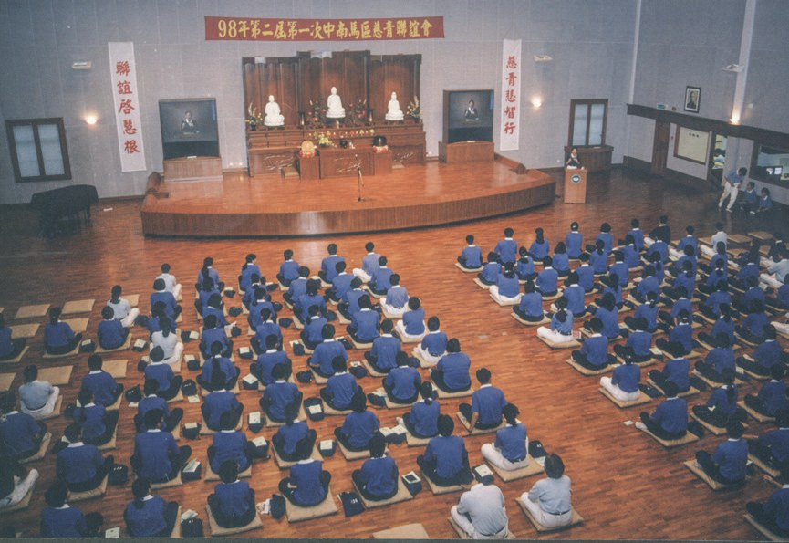
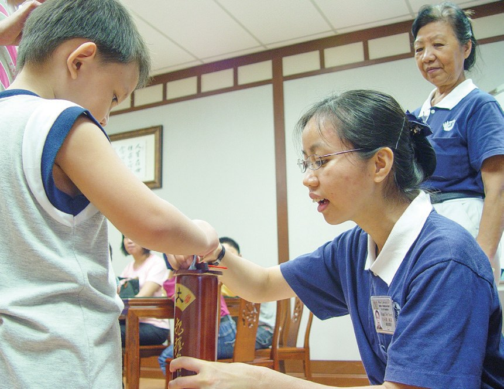
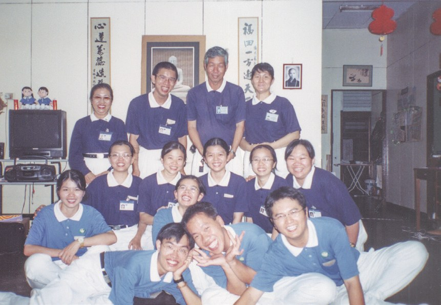
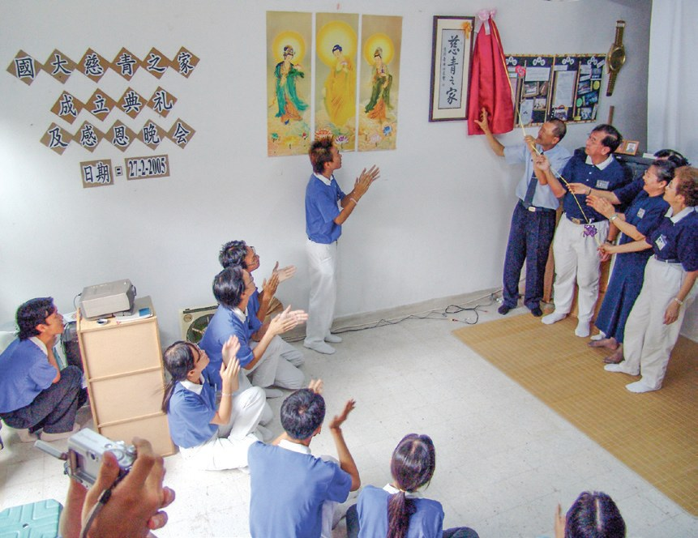
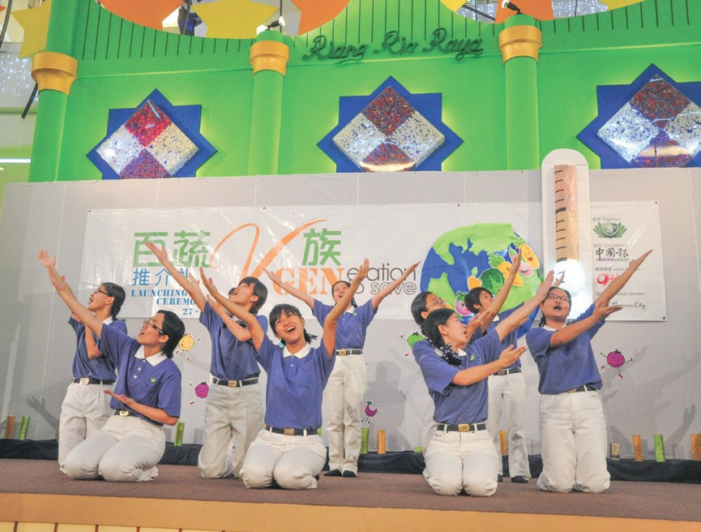
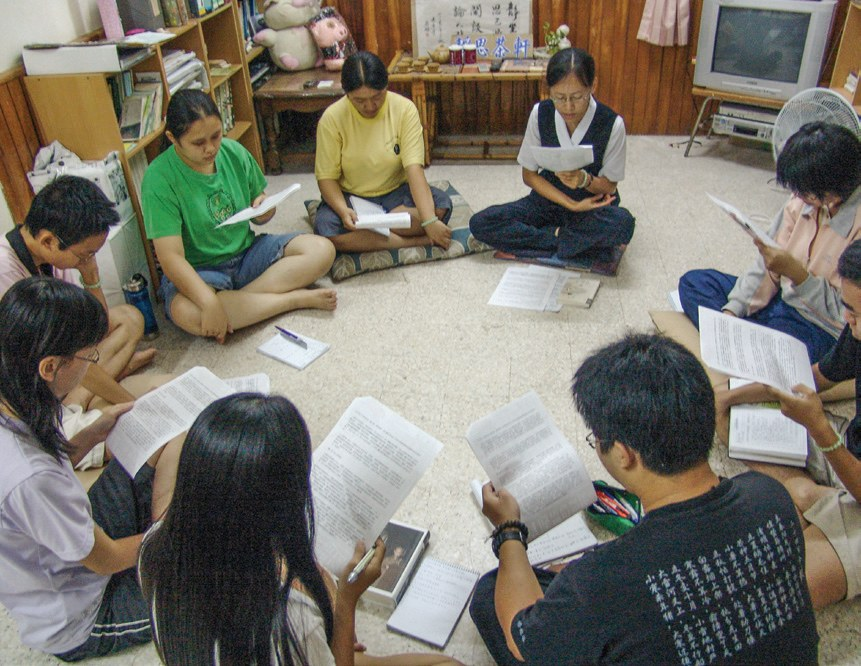
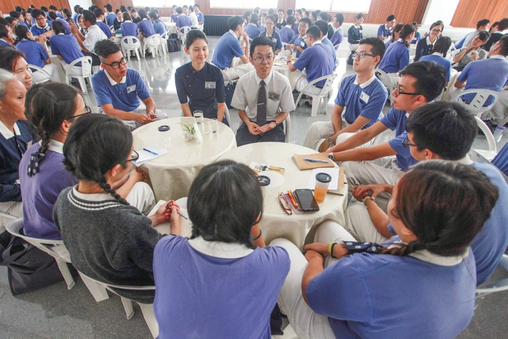
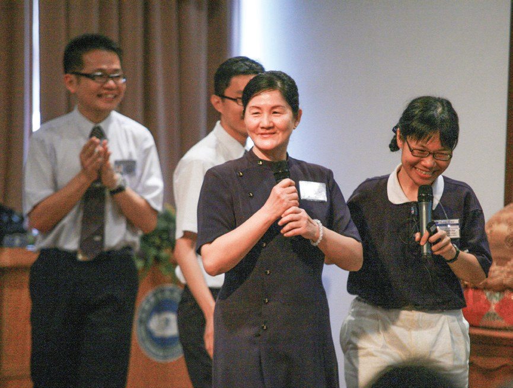

慈青善念開心門
大學生除了讀書，還能做什麼？

先別急著下結論，讀完再說說你的想法～
這一篇講慈青：大專院校裡的慈濟青年。手機還不普遍的年代，他們到電話亭排隊邀同學；沒有場地，就租一間屋當「慈青之家」。
他們做環保、教難民孩子寫字、早起聽晨語，還演出兩場舞臺劇，吸引五千多位觀眾。
下面是原書的節錄，紅色底線是我們替你標出的轉折點。
讀之前：你覺得年輕人最需要的是什麼？
第一位慈青
從檳城的營隊，到雪隆的校園。閱讀引導
慈青悲智行，聯誼啟慧根
上人期勉・p.403是馬來西亞第一位慈青，常和同學前往檳城參與慈濟活動。
馬來西亞國立大學（簡稱國大）第一位慈青周月娥，在1994年參與第一屆慈青生活營後，便發願要把慈濟的菩提種子撒播於國大校園。

就發願帶回校園。


她發願要將慈濟大愛清流撒播校園，與更多人分享。
更在2011年3月，正式成立慈青社，是全馬第一間註冊成為校內正式社團的慈青社。

正式註冊的慈青社！
碰了不少釘子
手機還不普遍的年代，怎樣邀同學來參加營隊？閱讀引導
開始走訪校園內學生宿舍，逐層逐戶敲門拜訪，並介紹慈濟；由於同學們未曾聽聞慈濟，加上慈濟又是以佛教為背景的團體，過程中碰了不少釘子。

一戶一戶去敲門……
在手機不盛行的年代，電話邀約同學是一項浩大的工程。
由於不能佔用電話太久，而有些同學還需數次方能聯繫上或給予答覆，故需往返無數次排隊等待……

排了一次又一次。
許多慈青對慈濟的熱愛與信任，以單純的心、堅韌的耐力一一克服困難與考驗……
猜一猜閱讀引導
截至2015年，中南馬慈青辦了多少屆慈青生活營？
一起租一間屋
學校不給資源，慈青自己找一個家。閱讀引導
1998年10月，博大學生黃章威承租博大附近的單層房屋，取名為「慈青舍」，除了供慈青居住，也作為博大慈青固定活動及聯誼據點。

成了慈青的家！

希望能匯聚學長姊們的力量，用過去累積的經驗，陪伴一屆又一屆的菩提種子。
慈青學長會著手推動「燕子歸來」專案，藉著各種管道去聯繫過去的慈青們……

畢業了也回家。
環保、原住民、難民孩子
慈青走出校園，做了好多事。閱讀引導
2007年1月，國大、馬大、博大慈青推動在用餐或外帶時自備環保餐具……

共有28所大專院校響應，三千多位參加者完成茹素100餐。
每人吃素一百餐！
當地唯一的正規小學蘭巴達，必須走上八到十個小時的山路才能抵達……
宿舍沒有水、電、供食，孩子們常以鹽巴配飯充飢。
就是一餐……
期間也幫助原住民學童讀到高中畢業、進入護士學院，甚至有兩位考上沙巴大學，也加入慈青的行列，成為新一批的菩提種子。
「教導孩子們寫字，握住他們的手，和他們一起溫習課業，那種感覺，是非常特別的。」
慈青李思齊表示・p.412一起寫字。
他認為孩子們缺少的只是一個機會，看見孩子們如此認真，慈青就更加有力量去付出。
早晨五點半前起床，聆聽《靜思晨語》，這是「晨鐘起，薰法香」的緣起。

「薰法香就像慈航靠岸，必須快快起床，才能跟上師公上人的腳步。」
馬大慈青陳富強表示・p.413兩場演出，五千多位觀眾
慈青用一場音樂手語劇，學會感念父母。閱讀引導
經歷七個月籌備，五個月集訓，舞臺劇在10月演出兩場，吸引五千多位觀眾蒞臨欣賞。
- 277人演繹志工p.414
- 5,000多位觀眾p.414
- 38位演繹後加入慈青p.414
其中一句「一朝羽豐，反哺莫遺棄」，令她對沒有經常跟母親聯絡深感懺悔。
現在則常常透過短訊與媽媽分享生活點滴，也時時報平安讓媽媽安心。
學會常給媽媽報平安。
「以前在印裔社會裡，孝順父母親是一種美德，但在現今社會已逐漸消失，所以，我想邀約更多人參與，傳遞這分好因緣！」
第一位印裔慈青迪尼斯說・p.415「……我們不知道自己是否還有機會付出，不要等到遺憾發生了才後悔。」
薩然婭說・p.415學長和懿德媽媽
一位捨下高薪，一位化悲傷為力量。閱讀引導
2013年，他毅然捨下高薪職業，成為慈濟雪隆分會的職工。
「……我的腳步可能偶爾慢下來，但是絕對不會停下來。」
張傳溢說・p.415–416
「事業不需越做越大，穩定就好，這樣人生才不會在名與利之間辛苦地拉拔。」
張傳溢跟學弟妹分享・p.416穩定就好。
1993年時，她的母親因病往生，女兒又罹患血癌，人生頓失方向。
同年9月，女兒因病過世，陳麗珠化悲傷為力量，化小愛為大愛，積極投入慈濟活動。

是慈青籌劃活動時的依靠，也是慈青面對挫折時的心靈導師。
陪伴了好多孩子。
他們那樣的合心，是永恆的法親。
上人開示・p.418停一停：誰讓你記住了？閱讀引導
選一位你印象最深的人。沒有標準答案。
有人逐戶敲門，有人握著孩子的手寫字，有人失去女兒卻陪伴更多孩子。哪一位讓你最有感覺？

一起回頭看看吧～
回望
依本章原文整理，每一條都標了原書頁碼。閱讀引導
背後原因
為什麼要有慈青之家

小川學生住宿舍就好，為什麼要另外租屋？
- 不是正式組織
慈青社在各大專院校非屬正式組織，無法從學校獲得資源。p.407
- 租一間屋
除了供慈青居住，也作為固定活動及聯誼據點。p.408
- 遍地開花
博大慈青之家的成功，各院校的慈青之家相繼成立。p.408
後續發展
雪隆慈青一路走來

小禾從一個營隊到兩場舞臺劇公演，經過了多少年？
- 1994
第一屆慈青營，周月娥發願。p.403
- 1997.6
第一屆中南馬慈青交流會。p.404
- 1998.10
博大成立「慈青舍」。p.408
- 2003
沙大慈青啟動原住民寄宿生領養計劃。p.411
- 2011.3
思大慈青社正式註冊。p.405
- 2013.10
「浩瀚父母恩」公演。p.414
種子再發芽
被陪伴的人也成了慈青
小禾慈青陪伴過的人，後來怎樣了？
- 第一圈原住民學童
兩位考上沙巴大學，也加入慈青的行列。p.412
- 第二圈大專青年
有38位參與演繹後加入慈青。p.414
- 第三圈畢業慈青
「燕子歸來」，帶動他們回歸慈濟活動。p.409
以上只整理本章寫到的事；書裡沒寫到的，我們不替它下結論。
回頭看讀前的選擇閱讀引導
慈青們一起租屋，成立慈青之家（p.408）；張傳溢捨下高薪做慈濟（p.415）；李思齊說孩子缺少的只是一個機會（p.412）。同伴、方向、機會，慈青三樣都找到了。
為什麼又說絕對不會停？
只有你自己看得到喔！
準備好了就一起出發～